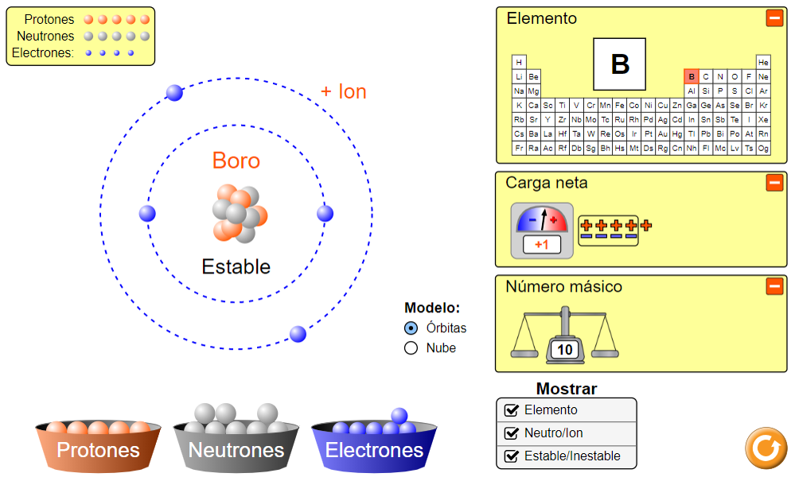
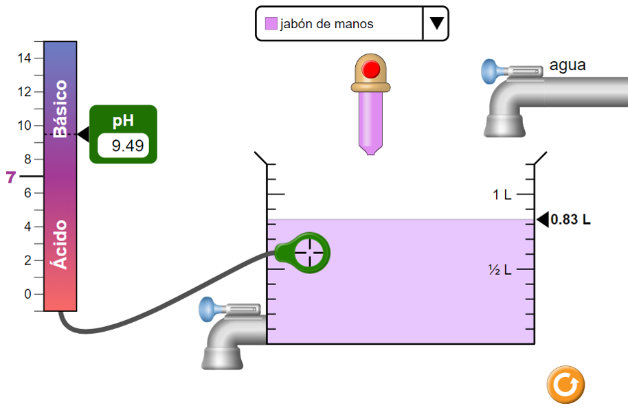
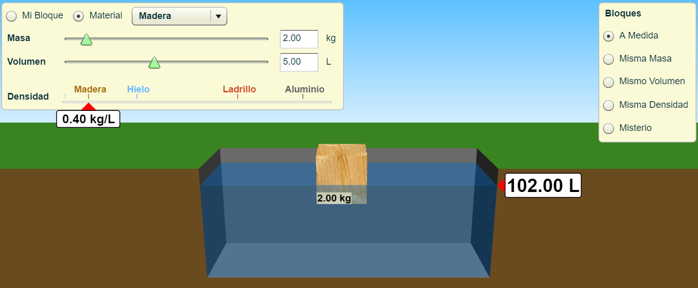
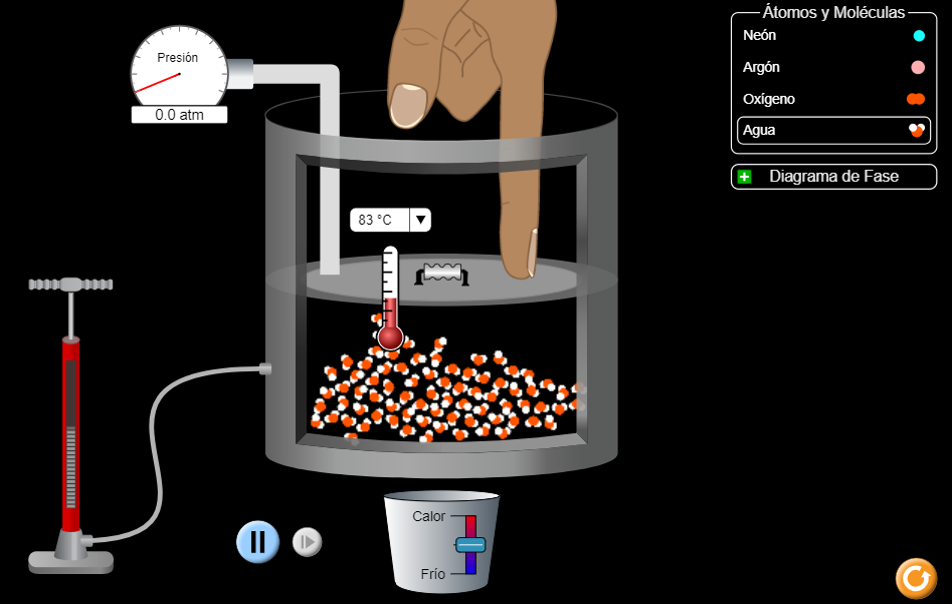
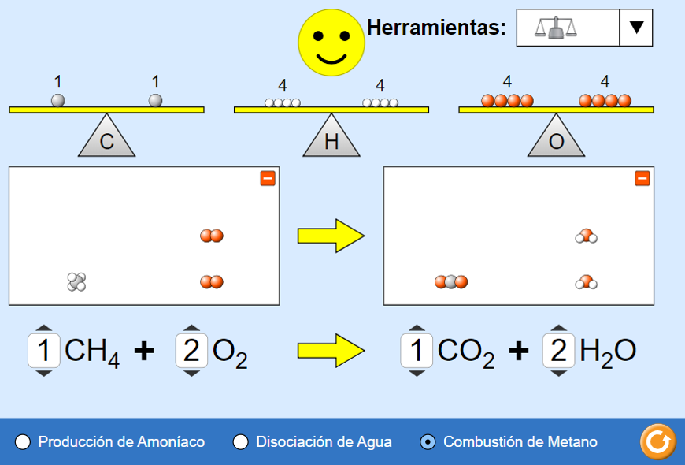

Simuladores
Un simulador es una configuración de hardware y software en la que, mediante algoritmos de cálculo, se reproduce el comportamiento de un determinado proceso o sistema físico.
Un simulador es un símil de la realidad. Es quizá la aplicación que más aprovecha las especificaciones de la computadora como recurso de aprendizaje y que cada día se extiende más en áreas tanto de educación como de administración.
PhET interactive simulations
PhET ofrece simulaciones divertidas, gratuitas e interactivas de ciencias y matemáticas que se basan en la investigación.
Sitio webSimulación que me permite crear átomos, utilizando las partículas subatómicas, la carga del átomo, estabilidad, etc.
Simulación que calcula el pH para diferentes concentraciones de sustancias de la vida diaria
Simulación para calcular la densidad de sólidos, Principio de Arquímedes de varios materiales
Simulación que permite visualizar como se calienta, enfría y comprime los átomos y moléculas y ve cómo cambian entre sólido, líquido y fases gaseosas
Simulación que permite balancear una ecuación química
Cisco Packet Tracer

Una herramienta de simulación de redes innovadora y potente que se utiliza para prácticas, detecciones y resolución de problemas.
Crocclip
Es un programa que permite simular circuitos eléctricos y electrónicos de una manera sencilla y rápida. Permite trabajar con símbolos o con imágenes. Además, también permite la simulación de sistemas mecánicos y electromecánicos.

Más info
Geogebra
Es un software matemático interactivo libre para la educación en colegios y universidades. Esta aplicación gratuita y multiplataforma permite interactuar dinámicamente con la geometría, el álgebra y el cálculo numérico.
Más info